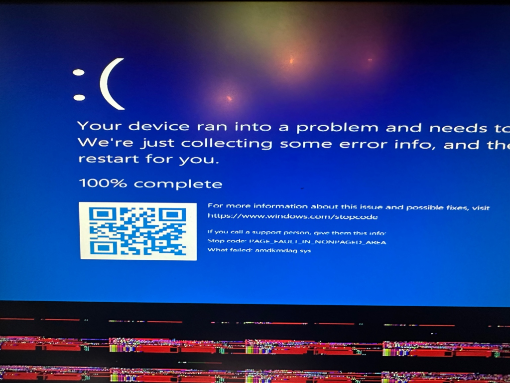
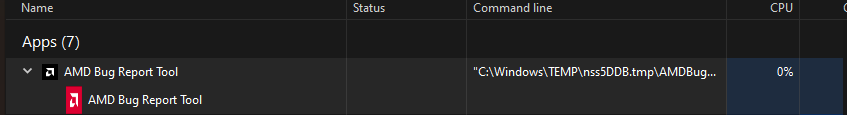
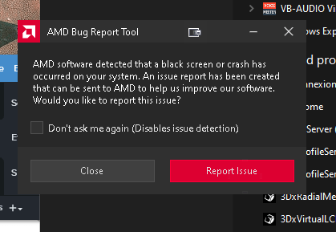
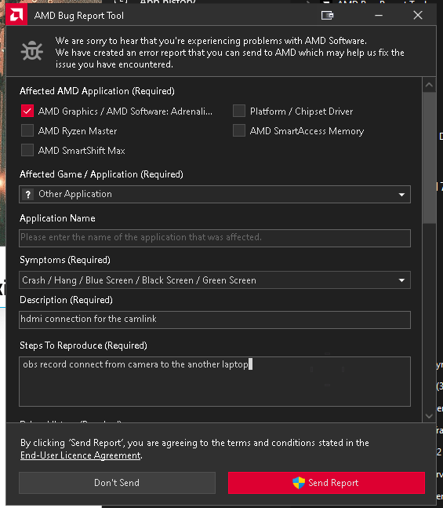
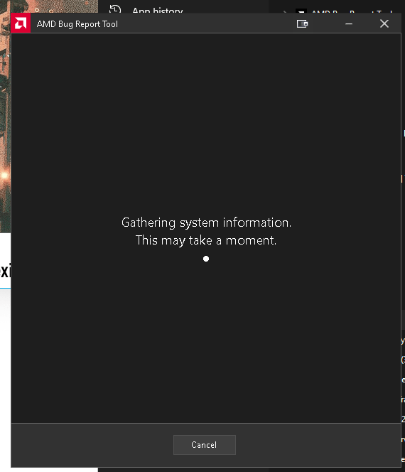
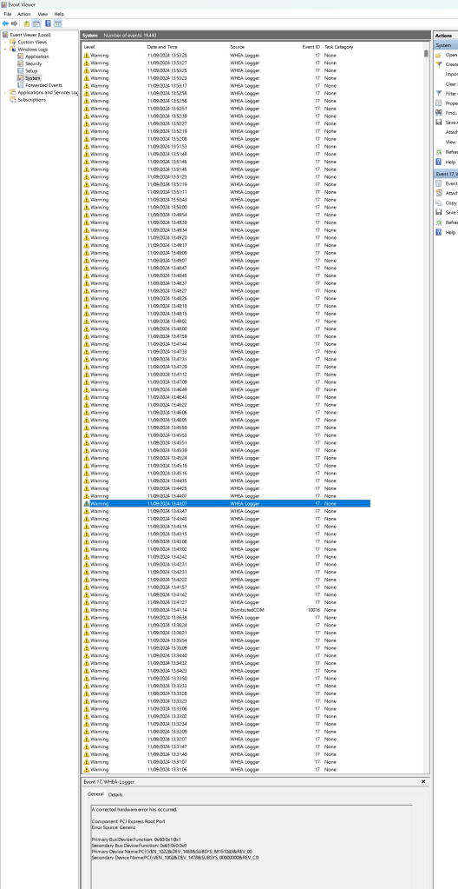
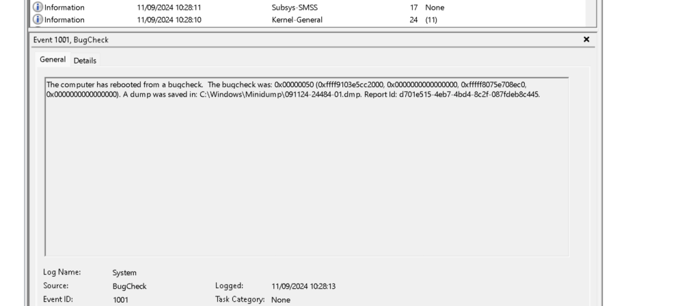

After Blue Screen





To use the AMD Bug Report Tool and find your last blue screen error for a blog post, you can follow these steps:
-
Open AMD Bug Report Tool: Since it is already running on your system (as shown in the image), you can interact with the tool to collect crash information.
-
Generate a Report:
-
If the AMD Bug Report Tool has an interface, it likely includes options to automatically collect system logs, crash data, and error information.
-
Look for options such as "Submit a Bug," "Generate Report," or "Collect Logs."
-
If prompted, specify that you're reporting a blue screen error (BSOD).
-
Locate Blue Screen Error Logs:
-
In many cases, BSOD logs are stored in the Windows Event Viewer. To access them:
Open the Event Viewer (Press Win + X, then select Event Viewer).
-
Navigate to Windows Logs > System.
-
Look for any entries labeled Error or Critical, especially those labeled BugCheck. These usually indicate blue screen errors.
-
You can also check the Minidump files, which are located in the folder
C:\Windows\Minidump. These files can be analyzed using tools like BlueScreenView or WinDbg for more detailed information on the error. -
Use the Report for the Blog Post:
-
Once you have generated the bug report or collected the blue screen error logs, use the information to describe what led to the blue screen (e.g., specific error codes, drivers involved, etc.).
-
You can explain how to access the AMD Bug Report Tool, use it for troubleshooting, and share your steps with others in the blog post.
If you're looking for additional details on analyzing crash logs for your blog, I can help with that too! Let me know how you want to proceed.
The error displayed in the image is a Windows "Blue Screen of Death" (BSOD) with the stop code: PAGE_FAULT_IN_NONPAGED_AREA. This error usually occurs when the system tries to access a portion of memory that should not be paged, which can be caused by various issues, including:
-
Faulty hardware (RAM or hard drive issues)
-
Corrupt or outdated drivers
-
Software conflicts
-
Corrupted system files
The message also indicates that the module that failed is amdkmdag.sys, which is related to AMD graphics drivers.
Steps to fix:
-
Update or reinstall your AMD graphics drivers:
-
Go to the AMD website and download the latest drivers for your GPU.
-
Uninstall the current AMD drivers using the "Device Manager" in Windows, then reinstall the downloaded driver.
-
Check your RAM for errors:
-
Run Windows Memory Diagnostic (search for it in the start menu) to check if your RAM is faulty.
-
Check for system file corruption:
-
Open the Command Prompt as an administrator and run:
sfc /scannow
This will scan for and attempt to repair corrupted system files. -
Update Windows:
-
Make sure your Windows system is fully up to date by checking Windows Update.
-
Run a disk check:
-
If you suspect hard drive issues, open Command Prompt as administrator and run:
chkdsk /f /r
This will check your drive for errors and attempt to repair them.
If the problem persists after trying these steps, it may be worth testing your hardware (RAM or GPU) or contacting a professional for further assistance.
A device is stuck in the back


The computer has rebooted from a bugcheck. The bugcheck was: 0x00000050 (0xffff9103e5cc2000, 0x0000000000000000, 0xfffff8075e708ec0, 0x0000000000000000). A dump was saved in: C:\Windows\Minidump\091124-24484-01.dmp. Report Id: d701e515-4eb7-4bd4-8c2f-087fdeb8c445.
There is a failing device >>> camera was not on the othr day
A corrected hardware error has occurred.
Component: PCI Express Root Port
Error Source: Generic
Primary Bus:Device:Function: 0x60:0x1:0x1
Secondary Bus:Device:Function: 0x61:0x0:0x0
Primary Device Name:PCI\VEN_1022&DEV_1483&SUBSYS_88151043&REV_00
Secondary Device Name:PCI\VEN_1002&DEV_1478&SUBSYS_00000000&REV_C0
Imported from rifaterdemsahin.com · 2024